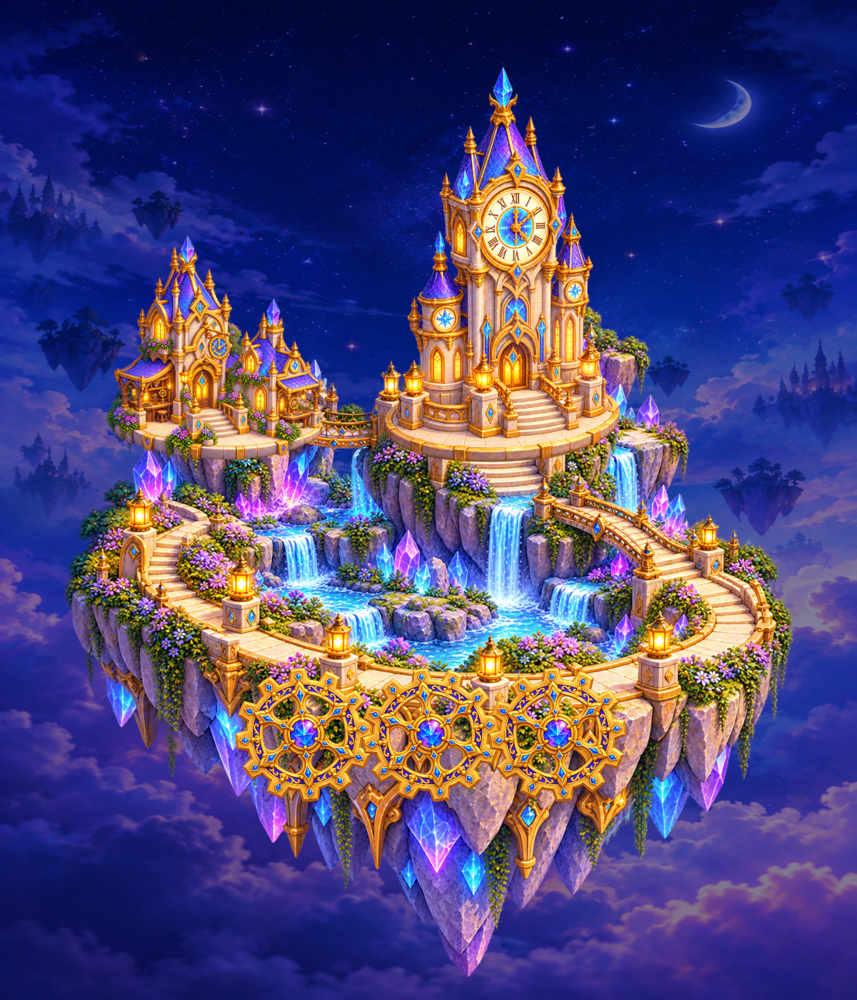
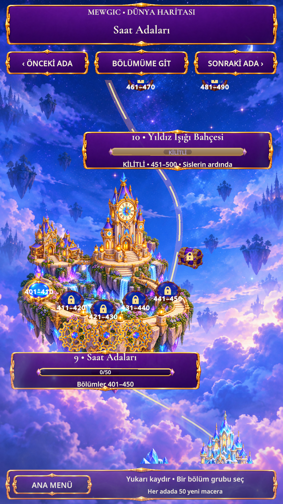

Gerçek proje referansı ve gerçek Unity çıktıları. Taş/altın uçan ada; bağımsız saat kulesi, sıcak pencereli atölyeler, üç ayrı dönen altın dişli ve mor-mavi enerji. İlk önizlemede kule üst panele yaklaştığı için son prefabda küçültüldü; dişliler isim plakasından uzaklaştırıldı.


Masalsı yumuşak3D malzeme, altın ışık ve mavi/mor kristaller referansla karşılaştırıldı. Düğümler ve sandık gerçek ayrı UI bileşenleri; beş onluk grup düzeni korunur. Saat kadranı dekoratiftir; zamanı gösteren yeni mekanik değildir. Dişliler görünüş için ters yönlerde döner, fiziksel diş teması/simülasyonu yapmaz. Köprü/fener/bitki ve su ayrıntıları tabanda bake edilmiştir; bu partta akarsu simülasyonu eklenmedi. İsim paneli alt kayanın bir kısmını örter; büyük önizleme tüm silueti gösterir.
9:19.5 · 9:20 + Safe Area · Bölüm seçicisi · 450→451 Gameplay · Teknik rapor